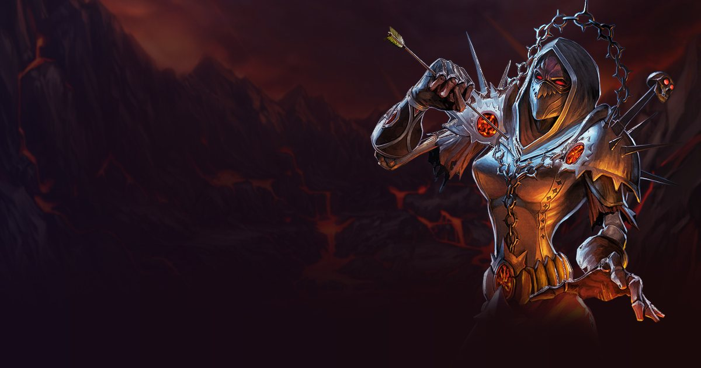

Destruction is the Ranged DPS specialization of the Warlock in WoW: Forever. This page summarizes its talent tree as it appears in the beta client (build 1.60.1.70170); the role is the one stated by the Icy Veins guide for the specialization.

The class's three trees, with the talents of the level-60 build (51 points) in colour and all the others in grey. The small number on the left of each row is the points you must have spent in the tree to reach it, and each talent's badge shows the points invested. This section is fixed: it does not move and does not depend on the calculator.
Our level-60 simulator build (51 points), the one used for the ranking: talents, gear and rotation are on the ranking page.
Gear, rotation and damage by ability for this level-60 build: Warlock Destruction →
Rank 5/5: Your Shadow Bolt critical strikes increase Shadow damage taken by the target from your attacks by 20% for 12 sec.
Rank 5/5: Reduces the casting time of your Shadow Bolt, Immolate, and Incinerate spells by 0.5 sec and your Soul Fire spell by 2 sec.
Rank 3/3: Reduces the Mana cost of your Destruction spells by 10%.
Rank 5/5: Increases the initial damage of your Immolate spell by 50% and your Conflagrate spell has a 100% chance to Daze the target, reducing the target's movement speed by 50% for 5 sec.
Rank 5/5: Increases the critical strike damage bonus of your Destruction spells by 100%.
Rank 1/1: Instantly blasts the target for 66 Shadow damage. If a non-trivial target dies within 8 sec of being hit with Shadowburn, the caster gains a Soul Shard.
Rank 3/3: Increases the critical strike chance of your Searing Pain spell by 10% and the damage done by all your Destruction spells by 10%.
Rank 1/1: Ignites a target that is already afflicted by your Immolate spell, dealing 95 Fire damage and consuming your Immolate effect.
Rank 1/1: Afflicts the target for 5 min, causing 15% of all damage done by the Warlock to other targets to also be dealt to the cursed target. Bane of Havoc is limited to 1 target, and only one Bane per Warlock can be active on any one target.
Rank 3/3: Increases the critical strike chance of your Conflagrate spell by 25%.
Rank 5/5: Hitting an enemy with Conflagrate increases all Shadow damage you deal by 10% for 20 sec, and hitting an enemy with Shadowburn increases all Fire damage you deal by 10% for 20 sec. In addition, Conflagrate has a 100% chance not to consume Immolate, and Shadowburn has a 100% chance to instantly refund a Soul Shard.
Rank 1/1: Deals 97 Fire damage to your target and an additional 25% damage if the target is afflicted by Immolate.
Rank 5/5: Improves your chance to hit by 5% and reduces all threat you generate by 20%.
Rank 5/5: Reduces the casting time of your Corruption spell by 2 sec and increases the damage it deals by 10%.
Rank 3/5: Increases all periodic damage done by your Warlock spells by 3%.
Our simulator's priority at level 60, set against what Icy Veins recommends. Their guides are written for the level-30 beta and for leveling: we keep what everyone agrees on, adopt what the simulation confirmed at level 60 and say where the two differ.
Agreed: Immolate first, Conflagrate and Shadowburn on cooldown, Incinerate as the filler at level 60. Added after measuring: Bane of Agony (+6 DPS over Doom). Searing Pain gives a lot of threat for little damage.
Measured by the simulator on the character above: the DPS gained by one more point of each stat, with the same random draws on both sides. The relative value compares each stat with one point of spell power. Crit, hit and haste are counted per rating point, like Strength or Agility, so they compare directly; they respect the caps: hit at the cap adds nothing. A value near zero or negative is within the margin of error or tied to a limit (mana, cap).
| Stat | DPS gained | Relative value | |
|---|---|---|---|
| Spell power per point | 0.538 | 1.0 | |
| Hit per rating point | 0.465 | 0.86 | |
| Crit per rating point | 0.276 | 0.51 | |
| Haste per rating point | 0.272 | 0.51 | |
| Intellect per point | 0.144 | 0.27 | |
| Strength per point | 0.0 | no effect | |
| Agility per point | 0.0 | no effect | |
| Spirit per point | 0.0 | no effect |
DPS gained when points of each stat are added on top of the simulated gear. Click a stat (or its row in the table) to bring its curve forward; the ring marks the estimated cap, past which every point is worth less than 20% of what it gave at the start.
The three best of each category, measured by the simulator on the character above. Only one scroll and one elixir or flask can be worn at a time: each gain is the DPS this consumable brings alone, compared with an empty slot, the rest of the set unchanged. Gains in the same category therefore do not add up. The row marked with a dot is the one in the simulated set.
| Consumable | DPS | Gain |
|---|---|---|
| Scroll of Intellect ● | +1.6 | +0.3 % |
| Consumable | DPS | Gain |
|---|---|---|
| Flask of Ancient Knowledge ● | +96.9 | +17.7 % |
| Elixir of the Mage-Lord | +21.5 | +3.9 % |
| Greater Arcane Elixir | +18.8 | +3.4 % |
| Consumable | DPS | Gain |
|---|---|---|
| Brilliant Wizard Oil ● | +23.1 | +3.7 % |
| Brilliant Mana Oil | +15.2 | +2.5 % |
| Well Fed (spell power food) ● | +13.5 | +2.1 % |
The gear our optimizer picks for this specialization among the items known from the beta (dungeons, the few raid items already known and crafted gear, which can be bought or made for you: prices and materials are not taken into account), with item effects simulated. Nothing is hand-picked: it is the result of the ranking's computation, and it will change as new items are discovered.
Enchantments up to skill 300, valued by the simulator when they give flat stats or flat weapon damage. The character does not need the profession: they can be bought or applied by an enchanter; Leatherworking armor kits (chest, legs, feet, hands) and Engineering scopes are counted too. A kit and an enchantment share the same permanent slot: a piece carries one or the other, and the legs, which have no enchantment, get the kit; spell-proc enchants (Crusader, Fiery Weapon...) and school damage are not simulated. The beta data has no ring enchantment up to skill 300.
Icy Veins guide dated 2026-10-02, read on September 21, 2026.
These are the deepest talents in the tree: they require 30 points already spent in the specialization. Official game text, at maximum rank.
Deals 97 Fire damage to your target and an additional 25% damage if the target is afflicted by Immolate.
Open Warlock in the talent calculator
Spend your 51 points, compare the three specializations and share your build by link.
Talent data comes from the beta client. The level-60 build, gear, stats and rotation come from our simulator and are validated by DPS measurements; the rotation is compared with the Icy Veins guides, written for the level-30 beta. Healing is not simulated. This data will change with the beta and with the game's launch on November 4, 2026.